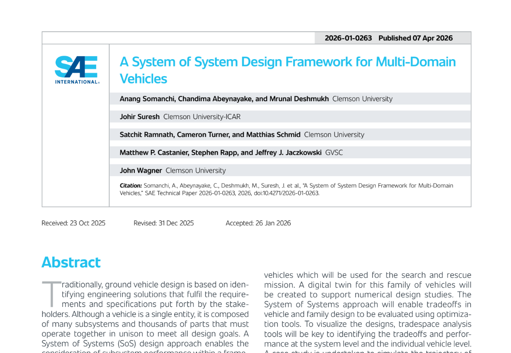

A System of System Design Framework for Multi-Domain Vehicles
Anang Somanchi, Chandima Abeynayake, Mrunal Deshmukh, Johir Suresh, Satchit Ramnath, Cameron Turner, Matthias Schmid, Matthew P. Castanier, Stephen Rapp, Jeffrey J. Jaczkowski, and John Wagner
WCX SAE World Congress Experience, Detroit, Michigan, United States.